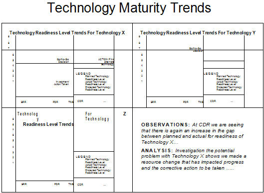

| Example: SE Leading Indicators - Technology Maturity Trends (PSM SE) |
 |
|
This indicator is used to evaluate the trends in technology maturity trends, including readiness and obsolescence, of specific technologies that are under development. The measure may indicate that technology opportunities exist that need to be examined and may warrant product changes. It may also indicate when a technology is becoming obsolete and may be a candidate for replacement. Trend of obsolescence exposure gives an indication of when to take action due to obsolescence risk. This should help avoid surprises from obsolescence and plan for right timing of technology insertion of new technologies An example of how such an indicator might be reported is show below for the readiness trends for selected technologies. Refer to the measurement specification in Example: Measurement Specification: Technology Maturity Trends (PSM SE) for the details regarding this indicator; the specification includes the general information which would be tailored by each organization to suit its needs and organizational practices. 
Technology Readiness Trends. The graph illustrates the actual readiness level of each of three technologies (X, Y, Z) in respect to the planned readiness level. The planned readiness would be determined by factors such as technology investment, availability of component technologies, and other factors. Observations are made on the graphs, with further analysis needed to understand underlying issues and causes where a potential problem is seen. For example, for Technology X, we see that just prior to PDR that there is a significant gap in the actual versus planned readiness, and that additional investment action was taken which post PDR brought the actual readiness much closer to planned, allowing for a go/no-go decision. Refer to Example: Measurement Specification: Technology Maturity Trends (PSM SE) for a detailed understanding of this leading indicator. |
| Copyright © 2007 by LAI, INCOSE, PSM, and LEARI (Systems Leading Indicators Guide Copyright) |